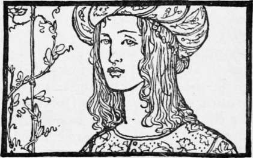

The Two Brothers. Part 7
Description
This section is from the book "Household Tales by Brothers Grimm", by Brothers Grimm. Also available from Amazon: Household Tales by Brothers Grimm.
The Two Brothers. Part 7
As he was sitting by the fire, his animals lying near him, he thought he heard the sound of a human voice; he looked about, but could see nothing. A little while after he again heard what sounded like a groan above his head, and looking up he saw an old woman sitting on the tree, moaning to herself, and saying, " Oh! Oh! Oh! how cold I am!" So he called to her, "Come down and warm yourself if you are so cold." But she answered, "I am afraid to come down, your animals will bite me." "No, no," said the huntsman, "they will do you no harm, old mother, come along down." But the old woman was really a witch, and so she said, "I will throw you,down a wand, and if you will strike them across the back with it, they will not then touch me," and so saying she threw him the wand, and he gave each of the animals a stroke with it, which silenced them, for they were immediately turned into stone. Feeling safe now from the animals, the old woman sprang down, and with another wand she had in her hand she touched the huntsman, and he was also turned into stone. At this she laughed, and took the man and his animals and laid them in a hollow, where there were already many stones of the same kind.
Now when the young king never came back, the queen became more and more anxious and distressed. It happened that just at this time the other brother, who had travelled east at parting, arrived in the kingdom. He had not been able to obtain service under any one, and had therefore wandered about, letting his animals dance before the people. One day it occurred to him that he should like to go and look at the knife, to ascertain how his brother was faring. When he came to it and looked at the blade on the side towards which his brother had travelled, he found half of it bright and half rusty. This filled him with alarm, and he thought to himself, " some great misfortune must have befallen my brother, but since half of the blade is still bright, I may yet be able to save him." He turned to the west with his animals, and when he reached the city gate, the guard met him, and asked him if he should announce his return to his wife, "for," he added, "the young queen has been in great anxiety at your absence for many days past, as she feared that you had perished in the enchanted forest." The guard, in short, thought that he was no other than the young king himself, seeing his likeness to his brother and the wild animals running after him. The huntsman saw at once that he was mistaken for his brother, and thought, " it will be better for me to pretend I am he, as I may find it easier to deliver him." Accordingly he let the guard go with him into the castle, and there he was received with joyful greetings. The young queen herself never doubted that it was her husband, and asked him why he had remained such a long time away. He answered, " I lost myself in the forest, and I could not find my way out before."
During the next few days he made enquiries about the mysterious forest, and finally said that he must go and hunt there again. The king and the young queen did all they could to dissuade him from this, but he insisted upon going, and rode off, accompanied by a large following. When he reached the forest, he saw the same white doe that had appeared to his brother, and he said to his people, " Wait here until I return, I must go after this beautiful creature," and he rode into the forest, his animals running after. But he could not overtake the doe, and at last found himself so far within the forest that he was obliged to spend the night there.
He had just made himself a fire when he heard a voice groaning overhead, "Oh! Oh! Oh! how cold I am!" He looked up, and there was the same old witch sitting on the tree. He called up to her, " If you are cold, old mother, come down and warm yourself."
"I am afraid your animals will bite me," she answered.
" They will not do you any harm," he said; but she called to him, "I will throw you down a wand; if you will hit them with it over their backs, they will not hurt me." When the huntsman heard this, he replied, "I am not going to hit my animals; come down or I will fetch you."
"What is it you want then?" she cried; "you have no power to touch me."
"If you don't come down I will shoot you," he answered again.
"Shoot at me then," she said, "I am not afraid of your bullets." So he aimed and fired at her, but being a witch she was proof against all leaden bullets, and laughed till she yelled, crying, "You haven't hit me yet." The huntsman, however, knew something about these matters, and he pulled three silver buttons off his coat and loaded his rifle with them, and as all her witchcraft was of no avail against these, he no sooner hit her, than she fell with a scream to the ground.
Then he put his foot on her, and said, " Old witch, if you do not at once tell me where my brother is, I will take you up and throw you in the fire." Full of terror, she begged for mercy, and told him that his brother and his animals were lying in a hollow of the forest, turned to stone. Then he made her go along with him, threatening her the while, saying, " Old Sea-cat, you will make my brother and all the other creatures lying with him, alive again, or into the fire you go." She took a wand and touched the stones, and immediately his brother and the animals came to life again, and with them many others, merchants, artisans, shepherds, who all rose up, thanked the huntsman for having released them, and returned home. The twin brothers, however, when they saw each other again, kissed one another and rejoiced greatly together. But they seized the old witch and burnt her to death, and as soon as she was dead, the forest opened of itself and became full of light and cheerfulness, and the royal castle could be seen three leagues away.
As the brothers were walking home together, the youngest said, "You and I look exactly alike, and are both dressed in the same royal robes, and are followed by the same animals; let us go in at opposite doors, and appear before the king at the same moment from different sides of the castle." So they separated, and the guard came from the one door and the other at the same time, to announce to the old king the return of the young king from the chase with his animals.
"It is not possible," said the king,, "the gates area league apart from one another" But as he spoke, a brother appeared at either gate, entered the castle court, and mounted the stairs.
The king turned to his daughter : " Make known to me which is your husband," he said; " I cannot tell one from the other." But the young queen was herself sore perplexed, and could not decide which was which, until she suddenly thought of the necklace that she had given the animals. So she looked, and found the gold clasp on one of the lions' necks, and cried out gleefully, "He whom this lion follows is my rightful husband." The young king laughed at this, and said, "Yes, that is the right one," and then all sat down together, and ate and drank, full of good cheer. When the young king learnt from his wife that evening how good and faithful his brother had been to him, he loved him more than ever.

Continue to:
Tags
fairy tales, children's stories, brothers grimm, household tales